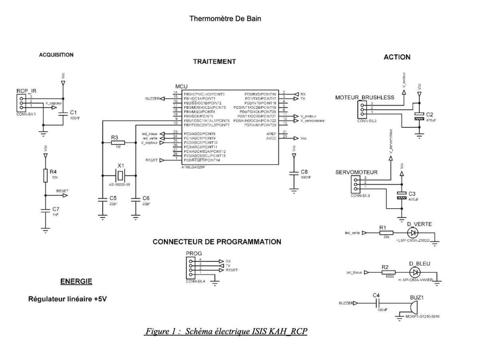
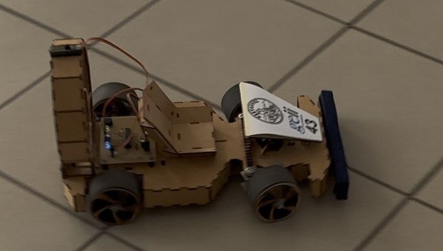

Le Kart à Hélice est le plus gros projet de ma première année. Le but ? Construire un petit véhicule capable de rouler tout seul grâce au vent soufflé par une hélice de drone géante. Ce projet regroupe tout ce qu'on apprend à l'IUT : l'électricité, la programmation, la mécanique et la gestion d'une grande équipe.
Pour réussir, nous avons suivi la méthode classique de l'industrie à travers 4 documents de référence.
➔ 💡 Cliquez sur le titre d'une case pour ouvrir notre rapport complet en PDF :
Rassemble toutes les contraintes imposées par le client, comme la taille maximale du châssis, la limite de poids et la présence obligatoire d'un bouton d'arrêt d'urgence.
Détaille toute notre phase de réflexion, le choix des pièces sur internet et les calculs théoriques sur ordinateur pour valider la puissance du moteur et la taille de l'hélice.
Sert de plan de montage et de guide pratique. Il explique comment nous avons dessiné les circuits imprimés, soudé les composants et câblé l'alimentation.
Regroupe l'ensemble de nos tests réels sur piste. Il prouve par des mesures locales que le kart avance bien et que la coupure de sécurité coupe le moteur instantanément.
Au sein du Dossier de Conception (DDC), j'ai pris en charge la sélection des composants et le respect des exigences pour les deux fonctions de notre récepteur :
Objectif : Réceptionner le signal de commande
Objectif : Piloter les moteurs, les voyants et le son

Notre arbre des exigences liant le bloc de traitement aux indicateurs et commandes physiquesPendant la fabrication, nous avons dû faire très attention à ce que l'émetteur et le récepteur communiquent parfaitement sans coupure. J'ai passé du temps sur la carte de commande pour m'assurer que la télécommande envoyait bien les bons signaux au kart.
Lors des derniers tests sur piste, tout a fonctionné comme prévu :
Ce grand projet à 8 m'a vraiment appris à partager le travail, à faire communiquer deux blocs électroniques ensemble (la manette et le kart) et à documenter chaque étape clairement pour les profs.

Le prototype final de notre Kart à Hélice prêt pour les essais dynamiques sur piste